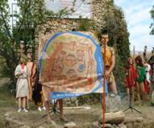
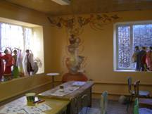
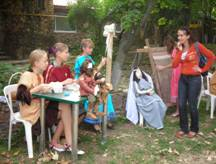

М.П. Долгопятова окончила ростовскую среднюю школу № 103 в 2005 г., в 2010 г. – ЮФУ. С первого курса она продюсер, ведущая актриса и режиссер команды КВН геолого-географического факультета. Увлекается анимационной практикой.
Электронный адрес: dolmarin@yandex.ru
Доклад М.П. Долгопятовой на защите дипломной работы на тему: «Особенности и перспективы развития анимационных технологий на предприятиях туристской индустрии Ростовской области»
Научный руководитель – доцент И.Ф. Черкашина
Современный туризм – весьма сложное и многогранное явление, которое исследуют представители различных областей науки и практики.
Цель моего дипломного исследования – изучение ресурсного потенциала и перспектив развития анимационных технологий на предприятиях туристской индустрии Ростовской области.
Для достижения цели обозначены следующие задачи:
1. Изучение международного опыта применения анимационных технологий на различных туристских предприятиях и выявление его специфики, универсальности и возможностей дублирования в условиях России.
2. Исследование ресурсного потенциала (творческого, кадрового, финансового и т.д.) Ростовской области для формирования коммерческих предложений на различных уровнях (международном, национальном, региональном, местном)
3. Разработка рекомендаций по формированию анимационных программ на примере объектов, включенных в список приоритетного внимания и государственной поддержки туристско-экскурсионной деятельности Ростовской области.
Основой и теоретическим обоснованием анимационных технологий является теория досуга.
Досуг рассматривается как временное пространство, деятельность, состояние и холистический (целостный) образ жизни.
Мы выбрали молодёжную целевую аудиторию как наиболее перспективную для развития анимации в туриндустрии.
К специфическим чертам туристского молодежного досуга относится преобладание у нее поисковой, творческо-экспериментальной, иногда даже экстремальной активности.
Анимация в туризме представляет собой целостный процесс взаимодействия аниматоров с туристами в досуговой сфере на основе соединения формального руководства и неформального лидерства специалиста, осуществляющего взаимодействие.
Основные понятия туристской анимации, которые используются в работе: сервис, рекреация, отдых, досуг, специалист анимационного сервиса.
В процессе исследования выявлены противоречия между:
развивающимся сегментом анимационного сервиса и отсутствием качественного учебно-методического обеспечения анимационной деятельности в социально-культурном сервисе и туризме;
развивающимся рынком туристических услуг региона и скудностью предлагаемых анимационных программ;
увеличением спроса среди туристов на организацию досуга и несформированностью качественного анимационного сервиса в регионе.
Особенности анимационной деятельности
осуществляется в свободное время;
отличается свободой выбора, добровольностью, активностью, инициативой как одного человека, так и различных социальных групп;
-
обусловлена национально-этническими, региональными особенностями и традициями;
-
характеризуется многообразием видов на базе различных интересов взрослых, молодежи и детей;
-
отличается глубокой личностностью;
носит гуманистический, культурологический, развивающий, оздоровительный и воспитательный характер.
Международные истоки анимации
На востоке в туристских комплексах с 70-х годов ХХ в. стали развиваться анимационные технологии в Турции, Египте, затем в Испании и далее на курортах Европы и остального мира. В Колумбии, например, устраивают томатные бои, в Италии – апельсиновые, в Таиланде и Индонезии – банановые. На Шри-Ланке каждое воскресенье устраиваются фестивали «Танцы Востока», все желающие могут пройти краткосрочное обучение искусству восточного танца. В Чехии и Венгрии разработаны шоу-программы «Встреча с привидением» и т.д.
Очень трудно разобраться в многообразных формах анимационной деятельности, поэтому мы разработали классификацию, основанную на выявлении лимитирующих условий, определяющих пространственно-временные возможности применения анимационных технологий в туризме для групп с разным количеством участников.
I. По количеству участников
массовые мероприятия
коллективные
корпоративные
семейные
малых групп и индивидуальные
II. По уровню предварительной организованности участников
индивидуально-организованные (отдыхающие пансионатов)
коллективно-организованные (семья, класс, студенческая группа)
массово-организованные (школа, предприятие и т.д.)
индивидуально-неорганизованные (отдыхающие на пляже, дискотека в парке и т.д.)
коллективно-неорганизованные (группа туристов, собранная турагентством, сборная экскурсия на теплоходе и т.д.)
массово-неорганизованные (народные гуляния)
III. По сложности предварительной подготовки
1. Помещения
1.1. Стационарные помещения со специальным и сложным техническим оснащением (бассейны, тренажерные залы, танцклассы, специально оборудованные мастерские и т.д.)
Анимация в отеле
Музейная анимация
Анимация в досугово-восстановительных центрах
Анимация в кафе
1.2. Специально подготовленные площадки на временной основе
спортивная анимация
анимация в активных видах туризма;
культурно-исторические праздники;
массовые театрализованные зрелища фестивали, ярмарки, карнавалы.
Анимация во время трансферов
1.3. Анимация в условиях культурно-природного ландшафта
анимация в парке
на лесной поляне
на поле
2. По ритмичности и длительности оказания анимационных услуг (лимитирующий фактор – время)
Ежедневные программы
Еженедельные программы
Сезонные
Праздничные
3. По форме мероприятия
Состязание
Шоу
Театрализация
Приключение
Анимационные технологии на туристских предприятиях Ростовской области
С развитием анимационной деятельности связывается развитие природно-исторических рекреационных парков. Один из них формируется в археологическом музее-заповеднике «Танаис»
«Танаис» – крупнейший в России археологический музей-заповедник, единственный в Ростовской области музей под открытым небом. В 2008 году он был признан приоритетным объектом туристско-экскурсионной деятельности Ростовской области.
Музей Детства, открытый в 2009 году при поддержке благотворительного фонда В.Потанина, функционирует исключительно как музей анимации. В нем работают следующие программы:
Как одевались наши предки
Глиняная азбука
Путешествие в храм монеты
Непостижимая загадка кукол и т.д.



Туристы могут принять участие в таких традиционных мероприятиях как «Пушкин и древность», «День Танаиса», которые можно развивать в дальнейшем, как событийный туризм. Эти праздники сопровождаются ярмаркой народных ремесел, выступлением самодеятельных фольклорных коллективов.
Песчаная анимация – новый эксперимент, который провели сотрудники музея для привлечения потока посетителей. Мы так же в 2007 году провели здесь учебное событийное мероприятие «Загадки древнего города», на котором и выяснили основные проблемы, связанные с внедрением анимационных технологий в деятельность музея.
Пользуясь классификацией анимационных технологий, предложенной И.Ф. Черкашиной, и моделью исследовательской деятельности менеджера, мы попытались разработать для музея-заповедника «Танаис» рекомендации по внедрению анимационных технологий в туристско-экскурсионную деятельность.
Рекомендации для «Танаиса»
Шаг 1. Симптоматика проблемы
Мы провели социологические опросы посетителей «Танаиса» в 2009 г. Анализ анкет показал, что большая часть посетителей попадает сюда по двум причинам:
1 - привозят с экскурсией (учащихся начальной школы и 5-6 классов чаще всего учителя истории). Как правило, организаторы довольствуются «обязательной программой - экскурсией по музею или экскурсией по городищу, после которых, детям дают возможность свободно побегать и перекусить. На этом культурная программа заканчивается.
2 - выезжают на собственных автомобилях «на пикник» и «подышать свежим воздухом». В праздничные майские дни количество таких посетителей достигает тысячи, а при хорошей погоде – две-три тысячи. Однако, отмечают респонденты, их развлечением сотрудники музея не озабочены.
Шаг 2 - идентификация (распознавание) проблемы
Проблема – отсутствие серьезных мотиваций у администрации «Танаиса» к развитию сферы услуг для неорганизованных посетителей музея.
Шаг 3 – целеполагание
Исследовав мотивацию посетителей, и позицию администрации музея, мы поставили цель, исследовать возможные управленческие решения, основанные на привлечении дополнительных ресурсов (кадровых, финансовых, творческих) на основе сотрудничества с предпринимателями.
Шаг 4 – анализ управленческих решений
Был проведен анализ договорных отношений музея с предпринимателями на оказание дополнительных услуг для туристов, пребывающих в музей. Результат - администрация ограничивала информацию о предпринимательской деятельности и неохотно шла на взаимодействие с общественными структурами, что повлекло напряженную атмосферу в среде посетителей, не допустимую для туристско-рекреационной среды.
Шаг 5 – выводы
Необходимо дальнейшее развитие системы взаимоотношений государственного учреждения с предпринимательскими структурами – единственный путь достижения туристской привлекательности объекта.
В заключении позвольте мне познакомить Вас с выводами, к которым мы пришли в результате проведенных исследований.
1. Рассмотренные в дипломе территории Ростовской области имеют значительный потенциал для развития анимационных технологий;
2. Рассмотренные учреждения не имеют квалифицированных кадров, которые могли бы осуществлять анимационную деятельность, поэтому подготовка профессиональных аниматоров – важная проблема, которая требует своего решения.
3. Перед всей туристский общественностью, менеджерами, руководителями и персоналом турпредприятий Ростовской области стоит со всей очевидностью проблема выбора новых стратегий развития и поиск эффективных технологий, способных привлечь потребителя и конкурировать как на внутреннем, так и международном рынке туруслуг.
4. Анимационные технологии требуют своего развития в туристских центрах Ростовской области, поэтому все это время мы говорили преимущественно о потенциальных возможностях и проблемах, стоящих на пути развития этих возможностей.
Осознание того, что проблема есть – уже шаг к достижению поставленной цели.
Спасибо за внимание!